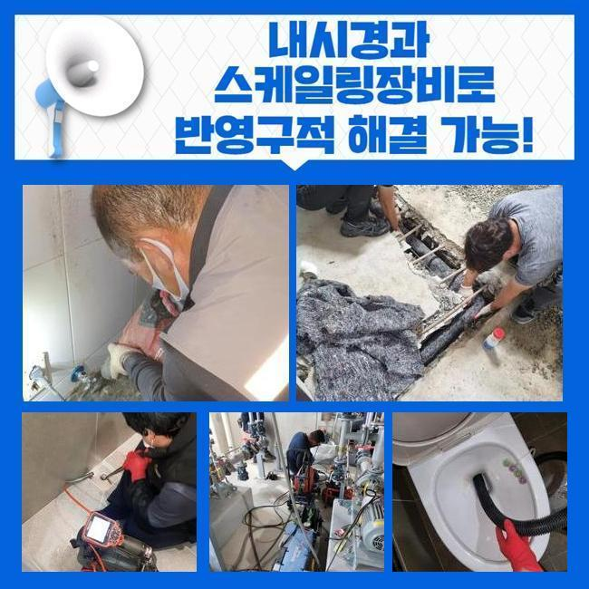
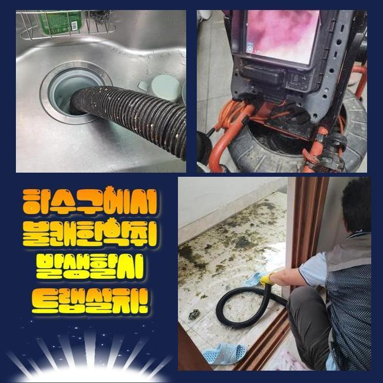
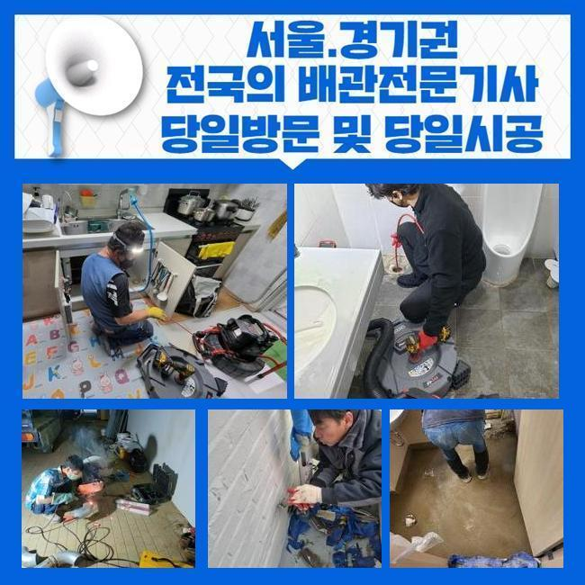
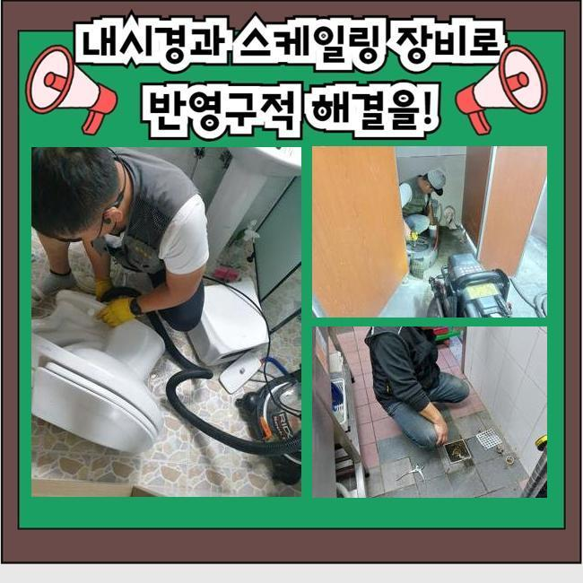
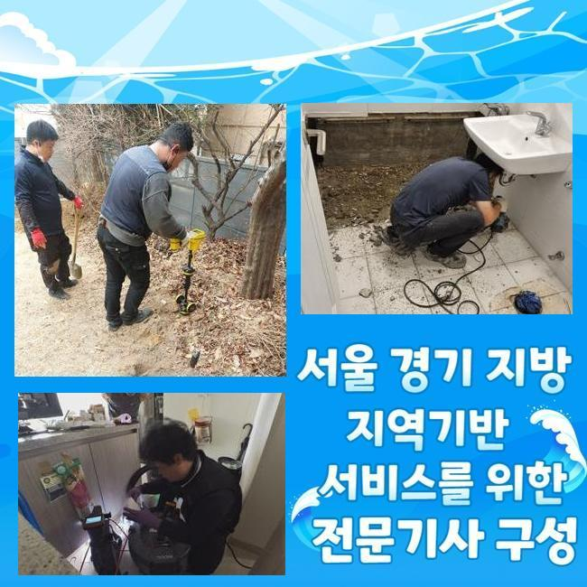
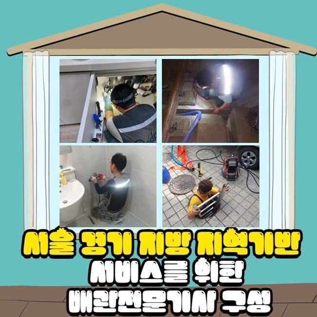

🏠 목감동화장실하수구역류 미산동 배관뚫기 누수공사
용인 싱크대막힘 전문 시공 후기

📋 작업 개요
- 위치: 용인
- 서비스 유형: 싱크대막힘, 하수구막힘, 배관막힘, 누수수리, 역류해결, 뚫는업체, 고압세척, 설비공사, 악취차단
- 작업 일시: 2025. 1. 28. 21:06
- 업체명: 하수구수사대 (010-5615-2118)
🔍 문제 상황
목감동화장실하수구역류 미산동 배관뚫기 누수공사
저희팀은 배수시설과 관련한 여러 작업을 시행중에 있죠
배관전문가가 상시적으로 업무대기하고 있고 의뢰인께서 부닥치신 트러블에 즉각 대처해드려요
금번엔 주방시설의 배수구막힘 처리 케이스를 소개해드리려 합니다
그저께 의뢰하신 데는 음식점이 모여있는 건물이었는데요
한 음식점의 배수문이 막혀버리게 되었으며 엎친데 덮친격으로 화장실 배수마저 시원치않다고 토로하셨어요
마침 근방에 대기중인 작업자가 즉시 내방드렸고 알맞은 방책을 행하기로 결정했어요
주방시설 배관막힘과 화장실의 배수구막힘이 발발한 데는 닭요리를 전문으로 하는 곳이었죠
주방시설에서는 여러 음식재료를 처리하기에 관로체증이 빈번히 나타납니다
그렇기 때문에 식당운영을 하고계신 경우엔 그에 대처할수 있는 다방면의 방책들을 행하고 있으시죠
평상시에 청결하게 사용하였더라도 어느날 갑자기 큰 이물이 들어가게 되면 정체가 생길수 있으므로 조심해야 해요
금번에 방문한 지점은 왜 막힘이 일어났는지 빈틈없이 점검해보겠습니다
일단은 주방쪽 시설부터 파악하기로 합니다
한식집은 일반 가정의 주방과 다르게 배수스텐의 부피도 상당합니다

🔎 원인 분석
💡 전문가 진단: 정밀 진단 장비를 사용하여 슬러지의 고착 여부를 판명하고 타격/세척 작업을 실시했습니다.
그렇기에 유입되는 배수량도 늘어나게 되는건데요
그래서 일반적인 주거지의 유동성테스트를 기준점으로 정하고 수선여부를 결정해선 안되고 이에 합당한 하수를 흘려보내 상태를 정밀하게 알아보는 것이 중요해요
이런 공정을 올바르게 하지 않고 넘어가버린다면 몇달뒤에 물막힘이 다시 일어날수 있죠
배수기능을 확인하였고 정상으로 물흐름이 진행되지 않는걸 알수 있었답니다
아주 조금씩 내려갔지만 정상적 운영을 시행하기엔 힘겨운 상태였어요
그다음 배관안으로 배관내시경을 투입시켜 선명하게 상태를 확인해보기로 했죠
기름성분은 물론이고 크고작은 석회잔재들이 하수관속을 채우고 있었답니다
파이프속에 흘러가면 안될것들이 누적되어서 정체가 생긴거랍니다
이런 부분들에 관하여 하수관에 유입되어선 안되는걸 말씀드리도록 하겠습니다
해당 사안을 기억해두셨다가 일상에 적용하시길 바라요
기름기는 배수과정에서 굳어지고 때문에 관로에 눌어붙을 가망이 커요
그러하기에 반드시 휴지 등으로 제거하고 설거지하는 게 중요해요
거기에 더하여 기름수거통도 효과적으로 활용해 나가시는게 좋습니다
최근 많이 이용하는 커피찌꺼기들도 배관정체를 촉발시킬수 있답니다
원두커피는 유분을 흡수하는 특징이 있기에 배관속에서 뒤엉키기 쉽답니다

🔧 작업 과정
그렇기 때문에 일반쓰레기로 분류하여 처분하는게 바람직해요
설거지를 하는도중 남긴 음식들을 싱크대에 투입하면 배관면에 누증될 가망성이 크죠
고춧가루 등은 과립이 작아서 필터를 뚫고 배관으로 이동하기 쉬우므로 따로 버리는것이 바람직해요
메뉴를 조리하시다가 남게된 전분도 관로에 바로 버리시면 떡처럼 변하여 배수문제가 발발할수가 있겠죠
그렇기 때문에 이러한 것들은 필수적으로 개별처리하여서 배수시설을 안정적으로 보존해나가시길 당부드립니다
내시경카메라를 통해 하단부분까지 조사하였더니 공용관로도 트러블이 일어났을거라 추정하였고 추가로 검사해보기로 했죠
우선적으로 문의하신 분의 주방공간의 하수관 정비를 시행해야 하겠습니다
닭백숙요리 전문식당이라 타업장과 비교하여 기름성분이 많았으며 그외 음식쓰레기들까지 합쳐져 길목이 차단된 국면이었어요
이상황이 오래 지속되며 배관과 하나가 돼버린 형국이었습니다
샤프트기기를 가동시켜 본 지점의 초반 세정시공을 시행하였습니다
부속품은 상황에 따라서 교환해서 쓸때도 있지만 보통 쇠사슬의 모양을 가진 노커를 이용하는데요
케이블의 끝부분에 해당 부속품이 체결되어 관로속에 집어넣고 작동시키면 고속도로 돌아가면서 잔류하는 배관이물들을 분리시켜주는 기능을 해주죠
통상적으로 해당 기계를 돌리면 이물들이 수월하게 탈락합니다
그러나 앞에서 설명드린대로 이건물은 중앙관로가 이물이 전이되었다는걸 확인한바가 있어요
그렇다면 개별배수관 처리만으로 본질적인 막힘이 소멸될리 만무합니다
정비된걸로 오인될수 있으나 중앙의 배관이 차단되었다면 몇주정도가 흐른다음에 재차 배수관이 막혀버릴수 있습니다
개별 하수관 세정을 끝마친뒤 지하실쪽에 있는 공동관을 검사하기로 했죠
내시경기기를 투입하니 곳곳에 쌓인 녹황색의 노폐물들이 가득하였답니다
장기간에 걸쳐 쌓인걸로 보였으며 사이즈도 방대하다보니 누적량이 많아진거죠
그것을 고압세척으로 정리하기로 결단했고 3시간 넘게 시공을 실행했습니다
공동관까지 스케일링 작업을 하고나서 의뢰인분의 닭요리집으로 올라가서 배관 물내림과 화장실의 배수구까지 진단수리를 실시했더니 과거에 막힌상황이 무색하게 물내림이 진행되어서 시원하게 빠져나갔답니다
금번에 처리한 장소는 상당량의 기름성분과 석회물질 덩어리가 막힘을 일으켰던 이유였고 지하공간의 횡주관까지 문제가 전이되어있어 정황이 심각했었죠
그것을 샤프트장비와 물세척공정으로 짜임새있게 처치하였으며 통수된 결과를 마주할수 있었어요
수선을 마감하고 나중에 발생가능한 문제들과 의뢰인께서 간과할수 있는 파이프보존 대책들을 말씀드렸죠


✅ 작업 완료
해당내용에 대해 추가적 궁금증이 있으셔서 세세하게 안내드렸답니다
작업을 잘못 진행하면 추후 관로에 상당한 문제점이 발생가능합니다
그러하기에 정확한 시공방식을 적용하여 해결하려는 기본방침이 중요해요
따라서 여러 변수를 염두에 두고 수리를 속행해야 된다는걸 강조해 드려요
업장에서 느닷없이 하수관이 막히면 영업을 못하는 상황이 될수 있답니다
그렇기 때문에 이글을 읽으시는 분들은 미미하게라도 이상이 목견되었다면 지연시키지말고 기술자에게 문의하시길 당부드려요




⚠️ 베란다 누수 및 방수 관리 방법
- ✅ 비가 많이 올 때 창틀 주변이나 아래층 천장에 얼룩이 생기는지 정기적으로 확인해 보세요.
- ✅ 우수관 주변 실리콘 마감이 들뜨거나 깨진 틈새가 있는지 손상 여부를 수시로 체크하세요.
- ✅ 베란다 바닥 타일의 줄눈(메지)이 소실되면 그 틈으로 물이 침투하여 누수가 유발됩니다.
- ✅ 누수 의심 증상 발견 시 방치하면 아래층 손실이 커지므로 즉시 전문가의 진단을 받으십시오.
💡 핵심 정리
- 확실한 장비 작업(내시경 점검 및 샤프트 스케일링)으로 원인을 뿌리 뽑습니다.
- 작업 후 1년 이내에 동일한 부위 재발 시 100% 무상 A/S 서비스를 보장합니다.
- 서울 · 경기 · 인천 전 지역에 24시간 언제든 긴급 출동할 수 있도록 항시 대기 중입니다.
❓ 자주 묻는 질문 (FAQ)
🚨 용인 싱크대막힘 문제로 고민이신가요?
정확한 원인 진단과 확실한 시공으로 재발 없는 해결을 약속드립니다.
24시간 긴급 출동 | 서울 · 경기 · 인천 전지역 | 1년 내 재발 시 무상 A/S